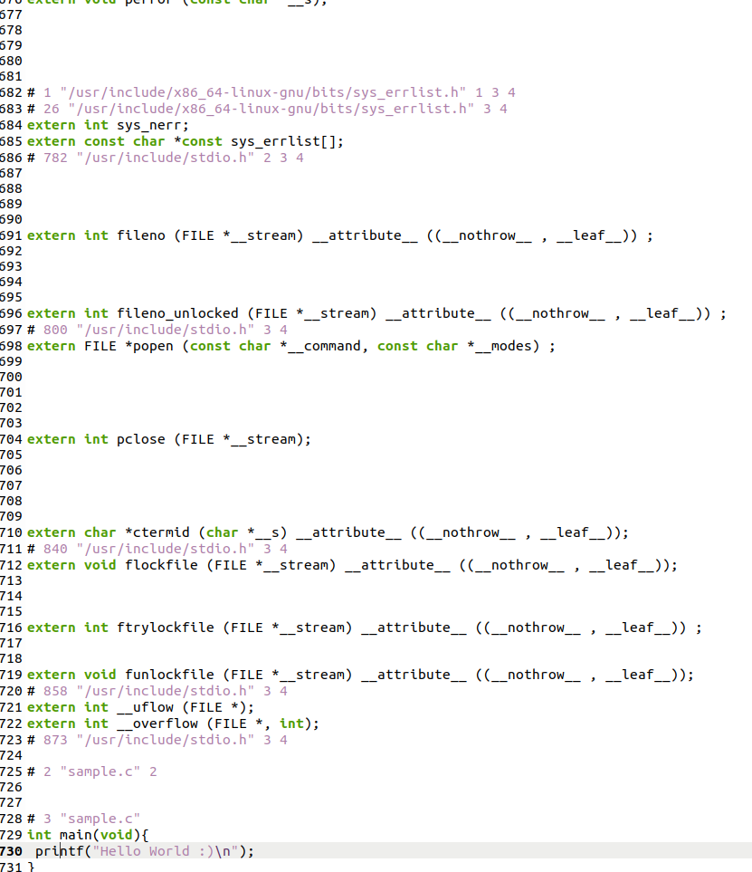
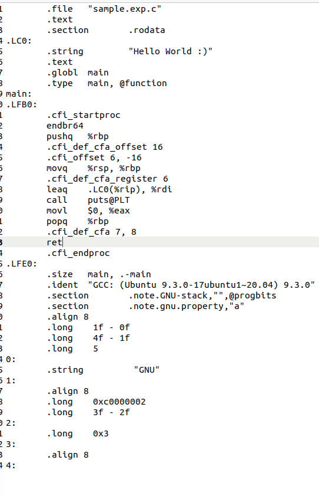
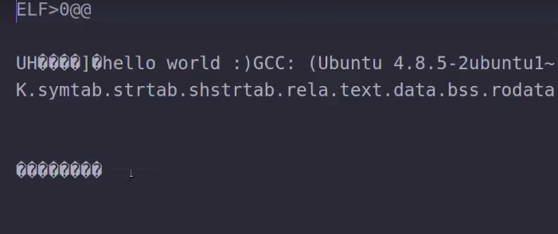
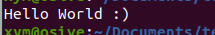

rustLodge
The GNU Compiler Collection is a compiler system produced by the GNU Project supporting various programming languages. GCC is a key component of the GNU toolchain and the standard compiler for most projects related to GNU and Linux, including the Linux kernel.
It take all the header files includes them into your source code It expands & inline solve your macros It strips out all the comments Create a simple files sample.c #include <stdio.h> int main(void){ printf("Hello World :)\n"); } This is pre-processing step. -o sample.exp.c for output of the sample.c gcc -E -o sample.exp.c sample.c Output, all the header information from stdio.h If there was any comment,there you would notice the comment was gone 
It take all the header files includes them into your source code
It expands & inline solve your macros
It strips out all the comments
Create a simple files sample.c
sample.c
#include <stdio.h> int main(void){ printf("Hello World :)\n"); }
This is pre-processing step. -o sample.exp.c for output of the sample.c
sample.exp.c
gcc -E -o sample.exp.c sample.c
Output, all the header information from stdio.h
stdio.h
If there was any comment,there you would notice the comment was gone
It does semantic analysis of your actual code It checks it for errors it removes dead code & removes unreachabke code If you specify a type of optimization it goes & runs those passes Now compiling this into assembly, if you don’t provide a output file it will create the name of the file except with essence gcc -S sample.exp.c output file name:- sample.exp.s This is actually assembly code 
It does semantic analysis of your actual code
It checks it for errors it removes dead code & removes unreachabke code
If you specify a type of optimization it goes & runs those passes
Now compiling this into assembly, if you don’t provide a output file it will create the name of the file except with essence
gcc -S sample.exp.c
output file name:- sample.exp.s
sample.exp.s
This is actually assembly code
At this point your code is now in assembly Then it goes through assembly which converts it to an actual object file Creating a object file using assembly code file sample.exp.s gcc -c sample.exp.s Output filename :- sample.exp.o  Give a name to object file which will be our executbale gcc -o executable sample.exp.o
At this point your code is now in assembly
Then it goes through assembly which converts it to an actual object file
Creating a object file using assembly code file sample.exp.s
gcc -c sample.exp.s
Output filename :- sample.exp.o
sample.exp.o
Give a name to object file which will be our executbale
gcc -o executable sample.exp.o
Finally it goes thorugh linking Takes that object file it combines it with any libraries that are present & also possibly the c standard library At this point you now have the executable Run the file .\executable 
Finally it goes thorugh linking
Takes that object file it combines it with any libraries that are present & also possibly the c standard library
At this point you now have the executable
Run the file
.\executable